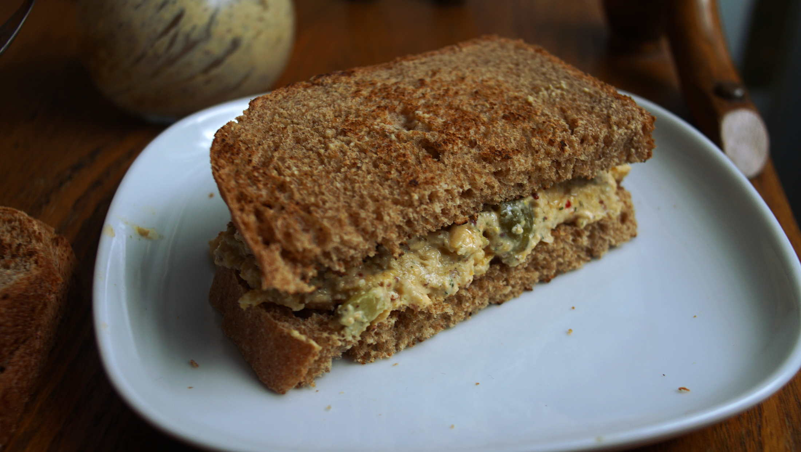

chickpea salad sandwich
4 portions — 20 minutes
Recipe location: Sidney, BC. Canada.
I recently ordered ingredients from BC Kelp, a company in northern Canada that grows their own seaweed. A lot of the food I make these days has either nori, wakame, bull kelp or bladderwack whole tips in it.
I'd like to see more people cooking with sea vegetables. You can snack on dried seaweed, or add it to soups and salads. The powdered version I'm using in this recipe, adds a lot of umami and color to meals.
You can order your own bull kelp powder from the BC Kelp website, they have a wide range of quality seaweed to choose from.
Recommendations
Adding a bay leaf, a bit of onion or a clove or two of garlic to the cooking water add a subtle seasoning to the chickpeas and boost flavor.
Substitutions
If you don't have access to bull kelp powder, you can use 5 ml capers or dulse flakes. These needs to be added to create a briny no-tuna taste.
 chickpeas 250 g, cooked
chickpeas 250 g, cooked prepared veganaise 60 g
prepared veganaise 60 g bull kelp powder 5 g
bull kelp powder 5 g pickled cucumbers 2
pickled cucumbers 2 cayenne pepper powder 1.25 g
cayenne pepper powder 1.25 g
chickpea salad
- For veganaise, see the recipe.
- Cook 125 g (3/4 cup) of dried chickpeas (see instructions), or use 1 can (15oz). Mash chickpeas down with a fork.
- Mix the mashed chickpeas with 60 g (3-4 tbsp) of venagaise, 15 g (1 tsp) bull kelp powder, 2 chopped pickles and 1.25 g (1/4 tsp) of cayenne pepper powder.
- Season with salt and black pepper and serve over toasted bread with tomatoes, salad etc.